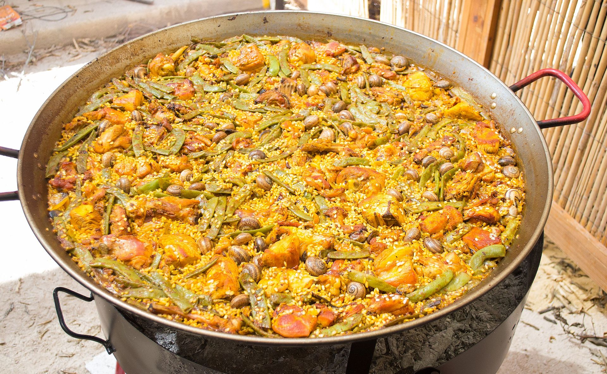

Paella

Description
Paella Valenciana is the original and most traditional paella from the Valencia region of Spain. This iconic dish features saffron-infused rice cooked with chicken, rabbit, green beans, and lima beans in a wide, shallow pan called a paellera. The key to great paella is achieving the perfect socarrat - the crispy, caramelized layer of rice at the bottom of the pan.
Ingredients
- 3 cups Spanish short-grain rice (Bomba or Arborio)
- 1 whole chicken (3 lbs), cut into 8 pieces
- 1 lb rabbit, cut into pieces (optional, can substitute with more chicken)
- 1/2 lb green beans, trimmed and cut into 2-inch pieces
- 1/2 lb lima beans (garrofón) or broad beans
- 2 large ripe tomatoes, grated (discard skins)
- 1 red bell pepper, cut into strips
- 4 cloves garlic, minced
- 6-7 cups chicken stock, heated
- 1/2 cup olive oil
- 1 tsp sweet paprika (pimentón dulce)
- Large pinch of saffron threads
- 2 sprigs fresh rosemary
- Salt and black pepper to taste
- Lemon wedges for serving
Steps
- Prepare the saffron: Crush the saffron threads with a pinch of salt and soak in 2 tablespoons of warm stock. Set aside.
- Season the meat: Season chicken and rabbit pieces generously with salt and pepper on both sides.
- Heat the paella pan: Heat olive oil in a 15-17 inch paella pan (or large wide skillet) over medium-high heat.
- Brown the meat: Add chicken and rabbit pieces, browning them well on all sides (8-10 minutes total). Remove and set aside.
- Cook vegetables: In the same oil, add green beans and lima beans. Cook for 3-4 minutes. Add the grated tomato and cook until it darkens and thickens (3-4 minutes).
- Add garlic and paprika: Add minced garlic and paprika, stirring for 30 seconds until fragrant. Be careful not to burn.
- Add rice: Add the rice, stirring to coat with the sofrito for 2-3 minutes. The rice should look slightly translucent.
- Add liquid: Pour in the hot stock and add the saffron mixture. Arrange the browned meat pieces on top. Add rosemary sprigs.
- Simmer without stirring: Bring to a boil, then reduce heat to medium-low. DO NOT STIR from this point on. Cook for 10 minutes.
- Add peppers: Nestle the red pepper strips into the rice. Continue cooking for another 8-10 minutes.
- Check for socarrat: In the last 2-3 minutes, listen for gentle crackling sounds - this means the socarrat is forming. If you smell toasting (not burning), it's perfect.
- Rest: Remove from heat and cover with a clean kitchen towel. Let rest for 5-10 minutes.
- Serve: Garnish with lemon wedges and serve directly from the paella pan. Scrape up some of the crispy bottom layer for each serving.
Home